Statistical power is a tricky and occasionally confusing thing. Defined as the probability of rejecting a false null hypothesis, statistical power is a function of the size of the effect of interest, the size of the sample, and the alpha cut-off.
For simple designs, such as a t-test, determining the power of a study is relatively straightforward: Identify the area of the comparison distribution that lies beyond the cut-point defined by alpha. However, for more complicated designs, like those involving repeated measures, determining the power of a study is much more convoluted. Oftentimes, it is necessary to repeatedly simulate the expected results of the study under a variety of conditions.
Below, I walk you through the simulations and power analyses for my dissertation.
Setting the Initial Values
For our simulations, we will need to create a sample of generated data. Think of these as computer people who will act in the way we tell them to. These values stay the same throughout all of the simulations except where explicitly mentioned.
########################################################
# Setting the seed so this is the same everytime #
set.seed(10101) #
# Setting the number of subjects to be 5k #
n1=5000 # Make an even number #
# Creating a subject ID number #
Subject1 = rep(1:n1) #
# Creating the number of repeated measures #
Sessions1 = rep(1:6) #
# Creates RM design #
X1 <- expand.grid(Sessions=Sessions1,Subject=Subject1) #
# Add covariate #
impcat<-rep(c(-.5,.5),n1) #
X2<-data.frame(impcat=impcat,X1) #
# Setting extremely weak relationships #
b1 <- c(0,0,.05,-.05,.1,-.15) #
########################################################
- In the code above, we created a sample of 5000 subjects (Ss) who each have 6 measurements of the criterion variable.
- Then, we added a between-subjects covariate. In the case of my dissertation, I included a categorical measure of goal importance (Most Important, Least Important) to include in the random structure of the multilevel model.
- Finally, I initialized the beta values for my eventual model, starting with the intercept, moving through the main effects, and ending with two, two-way interactions.
As you can see, other than the last interaction, I set my expected betas to be pretty weak. This allowed me to have a conservative estimate of a priori power.
First Set of Simulations: Varying the covariance between predictors
The degree to which a set of predictors covary affects your ability to reject a false null hypothesis (i.e., it affects your power). In these first three simulations, I am going to change the correlation among my predictors in a principled way and observe how that affects my power.
Simulation 1
In this first simulation, I will set the correlation between the relevance of the best friend’s strength to the goal (hereafter referred to as relevance of strength) and the relevance of the best friend’s weakness to the goal (heareafter referred to as relevance to weakness) to be weak and negative.
If people view others at least implicitly as a potential means to goal pursuit (Orehek et al., 2018), then they may differentiate their best friend’s strengths and weaknesses across goals. In other words, it is possible that people will view their friend’s strengths and weaknesses as relevant to different goal contexts. Therefore, in line with this reasoning, I set the correlation between the predictors in this first simulation to be weak and negative (-0.10).
##########################################################
##########################################################
###################### Simulation 1 ######################
### Setting weak predictor and changing correlations ###
########## Correlation between predictors = -.1 ##########
##########################################################
# Setting weak negative
sigma <- matrix(c(1,-.1,
-.1, 1), ncol=2)
# Creating predictors
x <- rmvnorm(n=n1, mean=c(0,0), sigma=sigma)
relstrength<-x[,1]
relweak<-x[,2]
# Checking correlation between predictors
cor(x)
## [,1] [,2]
## [1,] 1.00000000 -0.06656283
## [2,] -0.06656283 1.00000000
# Creating dataframe
X3<-data.frame(relstrength=relstrength,relweak=relweak,X2)
###############################
######## Simulation 1a ########
###############################
# Random intercept and random slope of importance
Sub <-diag(c(.6,.2))
# Setting cov between slope and intercept
Sub[lower.tri(Sub)] <- .05
# Setting residual variance
s <- (1-(sum(Sub)))^.5
# Checking
s # Residual s2=.15
## [1] 0.3872983
Let’s check to make sure the multiple R^2 of the model makes sense.
# Finish Triangle for random items
Sub[upper.tri(Sub)] <- .05
# Generating the simulation
SimInter1 <- makeLmer(DV ~ impcat+relstrength+relweak+impcat:relstrength+impcat:relweak +(1+impcat|Subject),
fixef=b1, VarCorr=list(Sub), sigma=s, data=X3)
#Check sim
summary(SimInter1)
# Check R2 - extract one model fit
Test.Data<-getData(SimInter1)
# Checking the fixed R2 for the predictor
R2.test<-r.squaredGLMM(SimInter1)
R2.test[,1] # 1.7%
## Linear mixed model fit by REML ['lmerMod']
## Formula:
## DV ~ impcat + relstrength + relweak + impcat:relstrength + impcat:relweak +
## (1 + impcat | Subject)
## Data: X3
##
## REML criterion at convergence: 42117.5
##
## Scaled residuals:
## Min 1Q Median 3Q Max
## -3.0017 -0.5620 0.0052 0.5621 3.2168
##
## Random effects:
## Groups Name Variance Std.Dev. Corr
## Subject (Intercept) 0.60 0.7746
## impcat 0.20 0.4472 0.14
## Residual 0.15 0.3873
## Number of obs: 30000, groups: Subject, 5000
##
## Fixed effects:
## Estimate Std. Error t value
## (Intercept) 0.000000 0.011181 0.00
## impcat 0.000000 0.007747 0.00
## relstrength 0.050000 0.002620 19.08
## relweak -0.050000 0.002631 -19.00
## impcat:relstrength 0.100000 0.005223 19.15
## impcat:relweak -0.150000 0.005270 -28.46
##
## Correlation of Fixed Effects:
## (Intr) impcat rlstrn relwek impct:rls
## impcat 0.116
## relstrength -0.002 -0.015
## relweak -0.002 -0.010 0.061
## impct:rlstr -0.005 -0.005 0.013 0.000
## impcat:rlwk -0.004 -0.005 -0.003 -0.016 0.063
## R2m
## 0.0173314
Here’s the effect size in Rho.
# Rho
R2.test[,1]^.5
## R2m
## 0.1316488
And in Cohen’s d.
# Cohen's d
d= (2*R2.test[,1]^.5) / (1-R2.test[,1])^.5
d # .27
## R2m
## 0.2656093
Now, let’s extract one sample of the simulation and run our analysis on it to ensure it’s working properly.
# Extracting test data to run sample primary analysis
Test.Data<-getData(SimInter1)
# Sample primary analysis
T1<-lmer(DV ~ impcat+relstrength+relweak+impcat:relstrength+impcat:relweak +(1+impcat|Subject),
data=Test.Data, REML=F)
summary(T1)
## Linear mixed model fit by maximum likelihood ['lmerMod']
## Formula:
## DV ~ impcat + relstrength + relweak + impcat:relstrength + impcat:relweak +
## (1 + impcat | Subject)
## Data: Test.Data
##
## AIC BIC logLik deviance df.resid
## 37366.4 37449.5 -18673.2 37346.4 29990
##
## Scaled residuals:
## Min 1Q Median 3Q Max
## -3.2988 -0.6156 0.0047 0.6182 3.6003
##
## Random effects:
## Groups Name Variance Std.Dev. Corr
## Subject (Intercept) 0.09009 0.3001
## impcat 0.03380 0.1839 0.18
## Residual 0.15040 0.3878
## Number of obs: 30000, groups: Subject, 5000
##
## Fixed effects:
## Estimate Std. Error t value
## (Intercept) 0.002219 0.004800 0.462
## impcat -0.009632 0.005180 -1.859
## relstrength 0.051483 0.002466 20.879
## relweak -0.052046 0.002467 -21.096
## impcat:relstrength 0.097427 0.004905 19.861
## impcat:relweak -0.161575 0.004946 -32.670
##
## Correlation of Fixed Effects:
## (Intr) impcat rlstrn relwek impct:rls
## impcat 0.081
## relstrength -0.004 -0.022
## relweak -0.004 -0.014 0.062
## impct:rlstr -0.012 -0.007 0.021 0.002
## impcat:rlwk -0.008 -0.007 -0.002 -0.008 0.066
Yep. That went the way we expected it!
Here’s the expected relationship between the relevance to strength and importance on interpersonal trust. 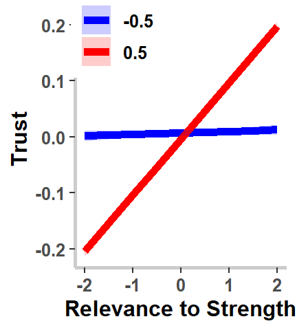
Here’s the expected power at N = 100, 150, 200, 250, 300, 400, and 500 for the interaction.
SCurve1
plot(SCurve1)
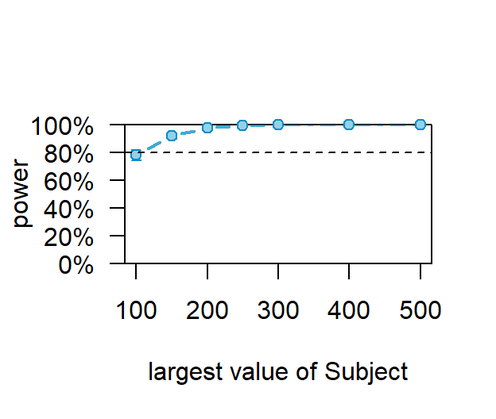
## Power for predictor 'impcat:relstrength', (95% confidence interval),
## by largest value of Subject:
## 100: 78.00% (74.11, 81.56) - 600 rows
## 150: 92.20% (89.49, 94.39) - 900 rows
## 200: 97.80% (96.10, 98.90) - 1200 rows
## 250: 99.40% (98.26, 99.88) - 1500 rows
## 300: 99.80% (98.89, 99.99) - 1800 rows
## 400: 100.0% (99.26, 100.0) - 2400 rows
## 500: 100.0% (99.26, 100.0) - 3000 rows
##
## Time elapsed: 0 h 21 m 24 s
And here’s the expected relationship between the relevance to weakness and importance on interpersonal trust.
#####################################################
### Plotting Primary Analysis: RelWeak*Importance ###
#####################################################
Final.Fixed2<-effect(c("impcat*relweak"), T1,
xlevels=list(impcat=c(-.5,+.5),
relweak=seq(-2,+2,.5)))
# Converting to a dataframe
Final.Fixed2<-as.data.frame(Final.Fixed2)
# Recoding as factor
Final.Fixed2$impcatF<-as.factor(Final.Fixed2$impcat)
# Plotting
Final.Fixed.Plot2 <-ggplot(data = Final.Fixed2, aes(x = relweak, y =fit, group=impcatF))+
geom_line(aes(color=impcatF), size=2)+
geom_ribbon(aes(ymin=fit-se, ymax=fit+se,fill=impcatF),alpha=.2)+
xlab("Relevance to Weakness")+
ylab("Trust")+
scale_color_manual(values=c("blue", "red"))+
scale_fill_manual(values=c("blue", "red"))+
theme_bw()+
theme(text=element_text(face="bold", size=12),
panel.grid.major = element_blank(),
panel.grid.minor = element_blank(),
panel.border = element_rect(fill = NA, colour = "NA"),
axis.line = element_line(size = 1, colour = "grey80"),
legend.title=element_blank(),
legend.position = c(.2, .92))
Final.Fixed.Plot2
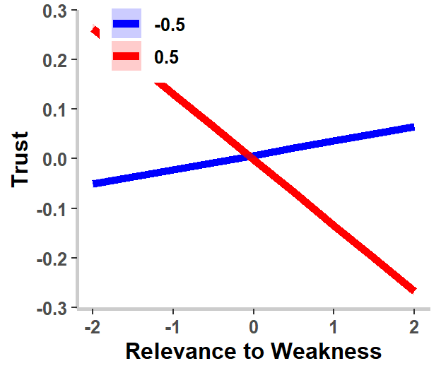
Here’s the expected power at N = 100, 150, 200, 250, 300, 400, and 500 for the interaction.
SCurve2
plot(SCurve2)
## Power for predictor 'impcat:relweak', (95% confidence interval),
## by largest value of Subject:
## 100: 97.80% (96.10, 98.90) - 600 rows
## 150: 100.0% (99.26, 100.0) - 900 rows
## 200: 100.0% (99.26, 100.0) - 1200 rows
## 250: 100.0% (99.26, 100.0) - 1500 rows
## 300: 100.0% (99.26, 100.0) - 1800 rows
## 400: 100.0% (99.26, 100.0) - 2400 rows
## 500: 100.0% (99.26, 100.0) - 3000 rows
##
## Time elapsed: 0 h 20 m 54 s
Simulation 2
In contrast to the potential situation just characterized, whereby people were expected to view their friend’s strengths and weaknesses as weakly and negative related, the next simulation estimates the effect of friend attributes’ goal relevance being positive correlated. In the study’s design, participants were first asked to identify and describe their personal projects and then to identify and describe their best friend. Therefore, the methods pressed for participants to imagine their personal projects, free from whom they may choose to rely upon. Consequently, it seemed possible that the same constellation of friend attributes may be perceived as both a strength and a weakness and relevant to similar situations. For example, perhaps Tim believes that Andy is a “free spirit.” Consequently, he may believe that Andy’s biggest strength is that he is good at generating novel solutions to problems, but Tim may believe Andy’s greatest weakness is that he is unreliable. To model this potential outcome in Simulation 2, I set a moderate and positive (0.40) correlation between the relevance of the best friends’ strengths and weaknesses to the goal.
SCurve1b
plot(SCurve1b)
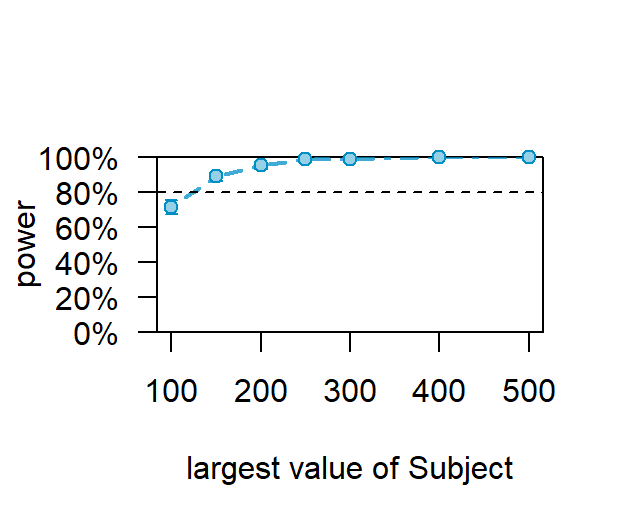
## Power for predictor 'impcat:relstrength', (95% confidence interval),
## by largest value of Subject:
## 100: 71.40% (67.22, 75.32) - 600 rows
## 150: 89.00% (85.92, 91.61) - 900 rows
## 200: 95.40% (93.18, 97.06) - 1200 rows
## 250: 98.60% (97.14, 99.44) - 1500 rows
## 300: 99.00% (97.68, 99.67) - 1800 rows
## 400: 100.0% (99.26, 100.0) - 2400 rows
## 500: 100.0% (99.26, 100.0) - 3000 rows
##
## Time elapsed: 0 h 22 m 33 s
SCurve2b
plot(SCurve2b)
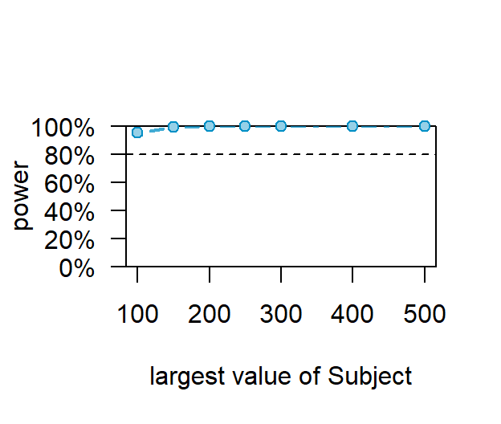
## Power for predictor 'impcat:relweak', (95% confidence interval),
## by largest value of Subject:
## 100: 95.40% (93.18, 97.06) - 600 rows
## 150: 99.40% (98.26, 99.88) - 900 rows
## 200: 100.0% (99.26, 100.0) - 1200 rows
## 250: 100.0% (99.26, 100.0) - 1500 rows
## 300: 100.0% (99.26, 100.0) - 1800 rows
## 400: 100.0% (99.26, 100.0) - 2400 rows
## 500: 100.0% (99.26, 100.0) - 3000 rows
##
## Time elapsed: 0 h 21 m 0 s
Simulation 3
In Simulation 3, I set a strong and positive (0.80) correlation between the relevance of the best friends’ strengths and weaknesses to the goal. This would be a worst-case scenario, not simply because of multicollinearity issues but because my predictions the effect of the relevance to strength and relevance to weakness on trust were in the opposite directions. Consequently, if Simulation 3 was true, then my hypotheses would certainly not be supported.
set.seed(10101)
###############################
######## Simulation 1c ########
###############################
# Setting very strong positive relationship between predictors
sigma1c <- matrix(c(1,.8,
.8, 1), ncol=2)
# Creating new predictors
x2c <- rmvnorm(n=n1, mean=c(0,0), sigma=sigma1c)
relstrength1c<-x2c[,1]
relweak1c<-x2c[,2]
# Create dataframe
X3c<-data.frame(relstrength=relstrength1c,relweak=relweak1c,X2)
# Generates the simulation
SimInter1c <- makeLmer(DV ~ impcat+relstrength+relweak+impcat:relstrength+impcat:relweak +(1+impcat|Subject),
fixef=b1, VarCorr=list(Sub), sigma=s, data=X3c)
SCurve1c
plot(SCurve1c)
## Power for predictor 'impcat:relstrength', (95% confidence interval),
## by largest value of Subject:
## 100: 37.40% (33.14, 41.81) - 600 rows
## 150: 49.40% (44.93, 53.87) - 900 rows
## 200: 61.20% (56.77, 65.49) - 1200 rows
## 250: 74.00% (69.92, 77.79) - 1500 rows
## 300: 80.20% (76.43, 83.61) - 1800 rows
## 400: 88.80% (85.70, 91.43) - 2400 rows
## 500: 95.20% (92.94, 96.90) - 3000 rows
##
## Time elapsed: 0 h 24 m 40 s
SCurve2C
plot(SCurve2C)
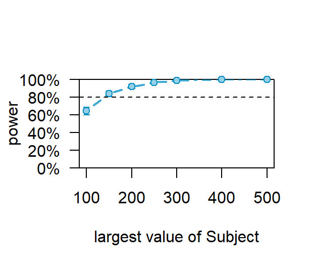
## Power for predictor 'impcat:relweak', (95% confidence interval),
## by largest value of Subject:
## 100: 64.40% (60.03, 68.60) - 600 rows
## 150: 84.00% (80.49, 87.10) - 900 rows
## 200: 92.20% (89.49, 94.39) - 1200 rows
## 250: 96.60% (94.61, 98.01) - 1500 rows
## 300: 98.60% (97.14, 99.44) - 1800 rows
## 400: 99.80% (98.89, 99.99) - 2400 rows
## 500: 100.0% (99.26, 100.0) - 3000 rows
##
## Time elapsed: 0 h 20 m 9 s
Increasing the Residual Variance
The second two simulations (M4, M5) modeled the effect of increasing the residual variance in the models on a priori power. Specifically, the total random variance was set to 1 and was allocated between the variance attributed to the random intercept, the random slope, the correlation between the random intercept and the slope, and the residual. In the first three models a large proportion of the variance was attributed to the random intercept (0.60), followed by the random slope (0.20), the residual (0.15), and the correlation between the random intercept and the slope (0.05). This specification assumes that much of the variability in trust is attributable to the individual’s general level of trust for their best friend. In other words, these models account for the fact that people really do tend to trust at varying levels (e.g., Rotter, 1980).
Simulation 4
In M4, the amount of variance attributed to the random intercept was decreased to 0.40. Because the random intercept was allocated most of the random variance, it was the easiest term to reduce while ensuring interpretability between previous models. Moreover, it’s initial setting represented the more unrealistic parameter setting because it assumed 60% of the random variance was attributable to average levels of trust between individuals. The result of this change was that the residual variance was increased from 0.15 to 0.35 for M4.
set.seed(10101)
###############################
######## Simulation 2a ########
###############################
# Decreasing variance of random intercept and ranmdom slope of importance to increase residuals
Sub2 <-diag(c(.4,.2))
# Setting cov between slope and intercept
Sub2[lower.tri(Sub)] <- .05
# Setting residual sd
s2 <- (1-(sum(Sub2)))^.5
# Finish Triangle for random items
Sub2[upper.tri(Sub2)] <- .05
# Generating the simulation using the values generated from Sim 1 with increased residuals
SimInter2 <- makeLmer(DV ~ impcat+relstrength+relweak+impcat:relstrength+impcat:relweak +(1+impcat|Subject),
fixef=b1, VarCorr=list(Sub2), sigma=s2, data=X3b)
SCurve1
plot(SCurve1)
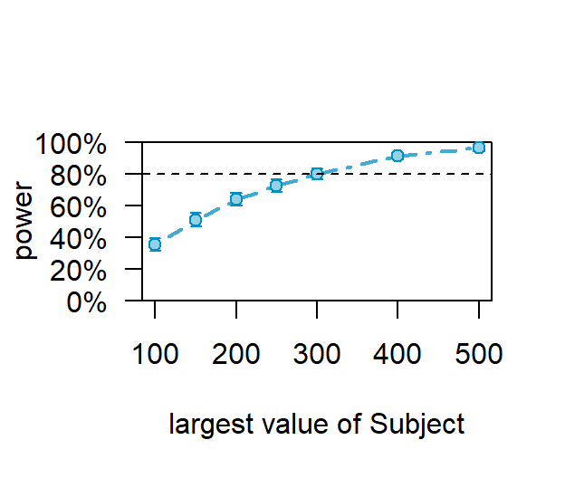
## Power for predictor 'impcat:relstrength', (95% confidence interval),
## by largest value of Subject:
## 100: 35.20% (31.01, 39.56) - 600 rows
## 150: 51.00% (46.52, 55.46) - 900 rows
## 200: 64.00% (59.62, 68.21) - 1200 rows
## 250: 72.60% (68.46, 76.47) - 1500 rows
## 300: 80.00% (76.22, 83.42) - 1800 rows
## 400: 91.60% (88.82, 93.88) - 2400 rows
## 500: 96.40% (94.37, 97.85) - 3000 rows
##
## Time elapsed: 0 h 21 m 39 s
SCurve2
plot(SCurve2)
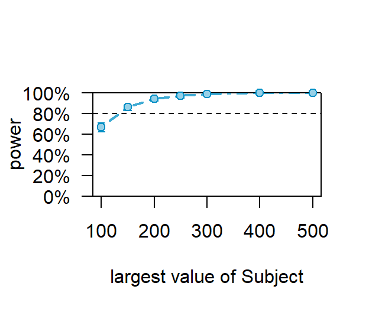
## Power for predictor 'impcat:relweak', (95% confidence interval),
## by largest value of Subject:
## 100: 66.60% (62.28, 70.73) - 600 rows
## 150: 86.00% (82.65, 88.92) - 900 rows
## 200: 94.20% (91.78, 96.08) - 1200 rows
## 250: 97.00% (95.10, 98.31) - 1500 rows
## 300: 98.80% (97.41, 99.56) - 1800 rows
## 400: 99.80% (98.89, 99.99) - 2400 rows
## 500: 100.0% (99.26, 100.0) - 3000 rows
##
## Time elapsed: 0 h 21 m 52 s
Simulation 5
In M5, I further reduced the amount of variance attributable to the random intercept to 0.20. This model assumes that the majority of the random variance is attributable to the residual and is therefore left unpredicted (0.55). However, the random intercept is kept as one of the most predictive specified term in the random structure, but in M5 it is assumed to be equivalent to the random slope between goal importance and trust.
set.seed(10101)
###############################
######## Simulation 2b ########
###############################
# Decreasing variance of random intercept and ranmdom slope of importance to increase residuals
Sub2b <-diag(c(.2,.2))
# Setting cov between slope and intercept
Sub2b[lower.tri(Sub)] <- .05
# Setting residual sd
s2b <- (1-(sum(Sub2b)))^.5
# Finish Triangle for random items
Sub2b[upper.tri(Sub2b)] <- .05
# Generating the simulation using the values generated from Sim 1b
SimInter2b <- makeLmer(DV ~ impcat+relstrength+relweak+impcat:relstrength+impcat:relweak +(1+impcat|Subject),
fixef=b1, VarCorr=list(Sub2b), sigma=s2b, data=X3b)
SCurve1b
plot(SCurve1b)
## Power for predictor 'impcat:relstrength', (95% confidence interval),
## by largest value of Subject:
## 100: 24.00% (20.32, 27.99) - 600 rows
## 150: 39.00% (34.70, 43.43) - 900 rows
## 200: 46.80% (42.36, 51.28) - 1200 rows
## 250: 57.00% (52.53, 61.39) - 1500 rows
## 300: 64.40% (60.03, 68.60) - 1800 rows
## 400: 77.60% (73.69, 81.18) - 2400 rows
## 500: 86.20% (82.86, 89.10) - 3000 rows
##
## Time elapsed: 0 h 22 m 8 s
SCurve2b
plot(SCurve2b)
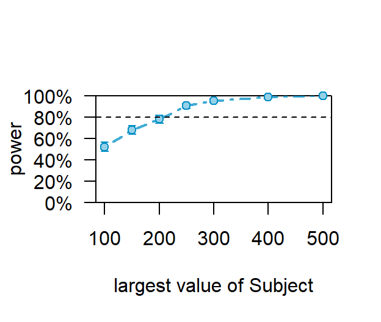
## Power for predictor 'impcat:relweak', (95% confidence interval),
## by largest value of Subject:
## 100: 52.00% (47.52, 56.46) - 600 rows
## 150: 68.20% (63.92, 72.26) - 900 rows
## 200: 78.00% (74.11, 81.56) - 1200 rows
## 250: 90.60% (87.70, 93.01) - 1500 rows
## 300: 95.60% (93.41, 97.22) - 1800 rows
## 400: 99.00% (97.68, 99.67) - 2400 rows
## 500: 99.80% (98.89, 99.99) - 3000 rows
##
## Time elapsed: 0 h 21 m 3 s
The Study Goes to Hell
Simulation 6
In my final model (M6), I use all of the parameter settings that decrease a priori power. Specifically, I set the correlation between my predictors to be 0.80, and I set my residual variance to be 0.55 by setting my random intercept term at 0.20, my random slope term at 0.20, and the variance attributed to the correlation between my random slope and intercept at 0.05. The parameters of M6 are unlikely because they assume that the fixed effects in my study are not predictive of trust, that participants will view their best friend’s strength and weakness as equivalently relevant across goals, and that the residual variance will account for 55% of the random variance (as opposed to the average level of trust between participants, the slope between goal importance and trust between participants, and the correlation between these two random terms). Therefore, this model’s estimate represents a lower bound on my expected power.
#################################################################################
################################# Simulation 3 ##################################
### Setting weak predictor, high residuals, and strong positive correlation ###
#################################################################################
# Generating the simulation
SimInter3 <- makeLmer(DV ~ impcat+relstrength+relweak+impcat:relstrength+impcat:relweak +(1+impcat|Subject),
fixef=b1, VarCorr=list(Sub2b), sigma=s2b, data=X3c)
SCurve3
plot(SCurve3)
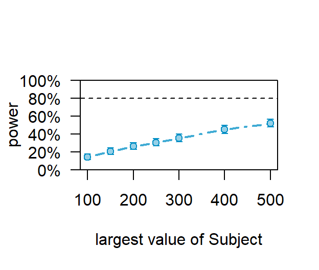
## Power for predictor 'impcat:relstrength', (95% confidence interval),
## by largest value of Subject:
## 100: 14.00% (11.08, 17.35) - 600 rows
## 150: 20.40% (16.95, 24.20) - 900 rows
## 200: 26.20% (22.40, 30.29) - 1200 rows
## 250: 30.40% (26.39, 34.64) - 1500 rows
## 300: 35.40% (31.21, 39.77) - 1800 rows
## 400: 45.00% (40.58, 49.48) - 2400 rows
## 500: 52.00% (47.52, 56.46) - 3000 rows
##
## Time elapsed: 0 h 21 m 46 s
SCurve3b
plot(SCurve3b)
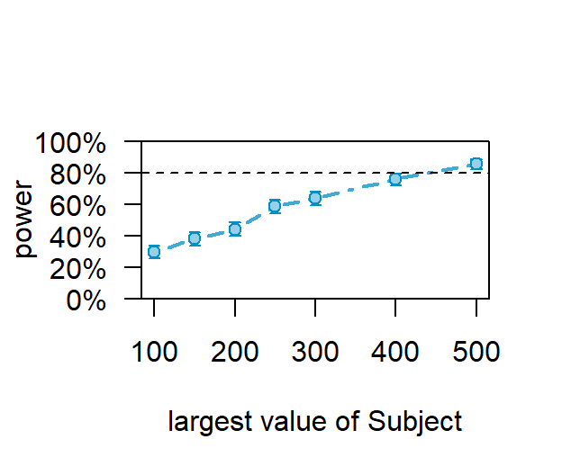
## Power for predictor 'impcat:relweak', (95% confidence interval),
## by largest value of Subject:
## 100: 29.40% (25.44, 33.61) - 600 rows
## 150: 38.00% (33.73, 42.42) - 900 rows
## 200: 44.00% (39.60, 48.48) - 1200 rows
## 250: 58.80% (54.34, 63.15) - 1500 rows
## 300: 63.80% (59.42, 68.02) - 1800 rows
## 400: 75.80% (71.80, 79.49) - 2400 rows
## 500: 85.60% (82.21, 88.56) - 3000 rows
##
## Time elapsed: 0 h 20 m 44 s
Graphing power of N = 400 across all simulations
Power400S<-c(100, 100, 88.8, 92.4, 80.2, 45)
Power400w<-c(100, 100, 99.8, 100, 98.4, 78)
Here’s the expected power at N = 400 for the interaction between the relevance to strength and importance across all 6 simulations. 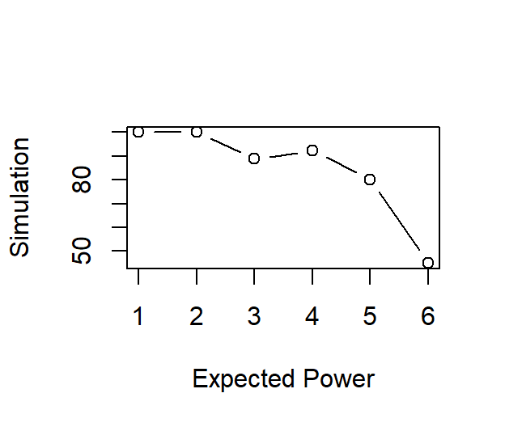
And here’s the expected power at N = 400 for the interaction between the relevance to weakness and importance across all 6 simulations. 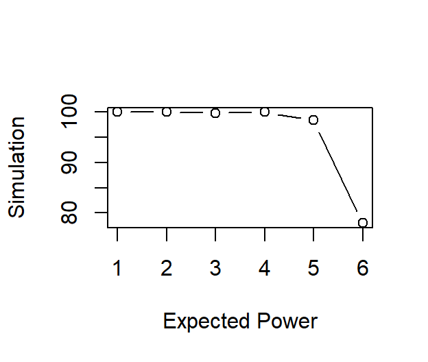
Notice the second interaction has more power at pretty much every simulation? That’s because we set the interaction including the relevance to weakness to be b = -0.15 whereas we set the interaction including the relevance to strength to be b = +0.10. That 5/100 increase made a huge difference!
